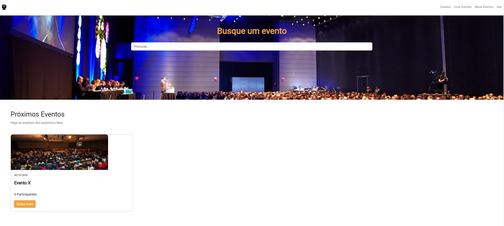

Principais Projetos
-

Projeto Ado.te
O projeto adote é uma aplicação web construida com a linguagem de programação python e o framework django, a aplicação foi feita em um evento chamado de pystack-week do canal do youtube pythonando. A aplicação tem o intuito, no qual um determinado usuario pode divulgar um determinado pet para adoção para ele ser adotado por alguem ou simplesmente ele adotar um determinado pet.
Visualizar site →
Tecnologias Utilizadas: HTML5, CSS3, Bootstrap, Python e Django e PostgreSQL.
Visualizar site no GitHub → -

Página X-MEN
A Pagina X-MEN é uma aplicação de front-end construída no evento do 0 ao programador contratado do canal do youtube dev em dobro no qual tem o intuito de mostrar personagens do X-MEN com nome, imagem e descrição.
Visualizar site →
Tecnologias Utilizadas: HTML5, CSS3 e JavaScript.
Visualizar site no GitHub →
-

HDC Events
O Sistema HDCEvents se trata de um Sistema no qual uma pessoa pode cadastrar um usuário e fazer login, onde possui o direito de cadastrar um evento e também de registrar sua participação em um determinado evento.
Visualizar site →
Tecnologias Utilizadas: HTML, CSS, JavaScript, Bootstrap, PHP, Laravel e MySQL.
Visualizar site no GitHub → -

Sistema de Checkin de Eventos da Secretaria do Planejamento de Estado da Bahia
Esse sistema foi realizado durante o programa Partiu Estágio do Governo do Estado da Bahia. Esse sistema, possui a função de registrar um evento e adiministrar os eventos que ocorrem na Secretaria, além disso é possível também uma determinada pessoa conseguir se cadastrar em um determinado evento através de um formulário de inscrição, podendo acessar pelo computador ou pelo celular via qrcode.
Visualizar site no GitHub →
Tecnologias Utilizadas: HTML, CSS, JavaScript, JQuery, Bootstrap, PHP, Composer e MySQL.
OBS: Infelizmente essa aplicação não pode ser hospedada, pois se trata de um sistema de uso privado pela Secretaria. -

ONG+UNIVERSIDADE
O projeto ONG+UNIVERSIDADE é um portal que foi desenvolvido como parte de uma disciplina do curso de Sistemas de Informação da Universidade Anhanguera, na cidade de Salvador, chamada Projeto de Extensão. Seu objetivo é possibilitar às ONGs estabelecerem um contato mais próximo com a instituição.
Visualizar site →
Tecnologias Utilizadas: HTML, CSS, PHP, Bootstrap, Rizal CSS e MySQL.
OBS: Esse projeto se trata de uma versão previa e não de uma versão final.
Visualizar site no GitHub →